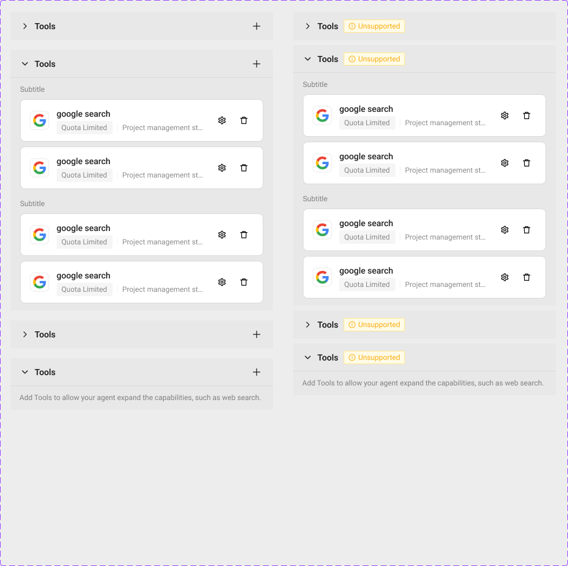
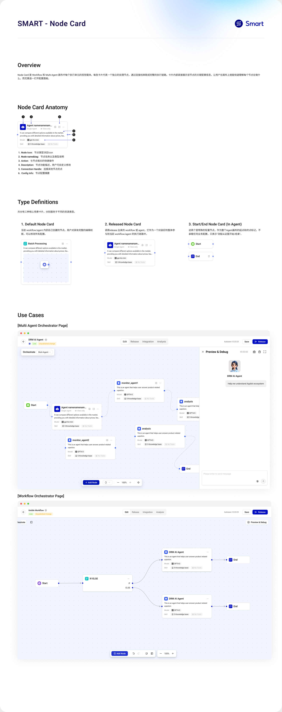

01 / 产品与任务
从 Agent 配置，到编排、知识接入与共享。
Smart 让团队把知识、工具和模型能力组织成 Agent 或工作流。用户先配置模型、指令与资源，再编排和测试行为；知识库处理外部内容，Gallery 支持共享与复用。产品原稿展示这些任务的不同侧面，具体页面由项目设计师负责，我的工作聚焦主题指导、业务组件指导与辅助共建。
Smart 产品全景 · 四类代表任务
Agent 配置：定义能力与输入
模型、工具、知识、附件处理与指令共同决定 Agent 如何工作，预览区支持即时核对。
Smart 产品设计稿 · Agent 配置
放大查看完整原图 ↗Workflow：编排路径并检查结果
在画布中组织节点，在配置区定义条件，再到测试区核对输入与执行结果。
Smart 产品设计稿 · Workflow 测试场景
放大查看完整原图 ↗Knowledgebase：把内容转成可用知识
接入文档后，还需要选择分段方式，并处理图片、表格与识别规则。
Smart 产品设计稿 · 知识库内容处理
放大查看完整原图 ↗Gallery：让已有 Agent 被发现与复用
共享时说明归属、用途和演示，并选择开放哪些交互、设置或复制能力。
Smart 产品设计稿 · Add Agent to Gallery
放大查看完整原图 ↗选自不同版本的真实产品设计稿，按配置、编排、知识与复用组织；用于说明产品任务与组件需要服务的场景。
- 配置与编排
- 模型、资源、指令与节点连接共同决定行为，需要表达依赖与不完整状态。
- 测试与定位
- 把结果对应到一次执行、一个节点及相关输入输出。
- 知识与复用
- 说明内容怎样被处理，以及已有 Agent 可以怎样被使用、查看或复制。
02 / 节点与资源
对象、类型与状态，要在同一个组件里讲清楚。
一个通用 Card 只能解决容器与布局。业务组件还需要保留领域含义：节点怎样被识别，资源在当前上下文中是否可用，以及状态变化后用户还能做什么。
业务语义 · 从节点身份到资源可用性
Node Card：类型与状态分开
自建、引用、起止等类型，与选中、成功、错误等状态分别组织。
Smart 业务组件库 · Node Card 类型与状态
放大查看完整原图 ↗Asset Card：挂载之后仍要判断
在已挂载的资源卡中表达配额、阻断、无权限与可执行动作。
Smart 业务组件库 · 指导与辅助共建
放大查看完整原图 ↗两组原稿共同说明：同一种布局需要承载不同对象的规则，不能只按外形合并。
03 / 配置结构
可增减的资源，与固定的参数，用不同方式组合。
两类配置区 · 共用外壳，保留不同结构
AssetList：管理动态条目
处理添加、移除、空态与不可用状态。
Smart 业务组件库 · ConfigSection / AssetList

放大查看完整原图 ↗ParamGroup：组织固定字段
把输入组合成有明确含义的参数分组。
Smart 业务组件库 · ConfigSection / ParamGroup
放大查看完整原图 ↗原始业务组件稿。对照关注的是内容结构与状态，完整细节可分别放大。
这里的复用粒度是配置区，而不只是输入框。区块的标题、操作和内容插槽有共用结构，内部仍允许资源列表与参数字段按照业务需要变化。
04 / 主题与特例
共用一套基础，也给产品差异一个明确位置。
主题设置需要连接到实际使用。产品文件选定对应模式后，基础组件继续引用共用变量，业务组件再组合这些基础。我与项目设计师一起检查引用关系，判断变化应作用于产品整体还是单个组件。
主题配置 · 产品模式与组件特例对照
产品文件：选择共用模式
颜色、尺寸与组件配置分别选择相应模式。
Smart 项目中的主题模式 · 原始记录
 放大查看完整原图 ↗
放大查看完整原图 ↗
组件属性：必要时保留例外
Smart 的通用圆角为 8，Tag 在组件层配置为 4。
Infra Design System UI-Kit · 2026-11-01 变量记录
 放大查看完整原图 ↗
放大查看完整原图 ↗
产品模式负责共用外观，组件属性保留必要差异；使用时同时检查变量和组件引用。
在这个项目里，主题指导的重点是让使用者理解修改范围，并在业务组件扩展后继续保留公共变量与组件引用。语义继承和多主题机制在 Infra Design System 案例中展开。
05 / 共建成果与后续扩展
把拆分依据留下来，让项目设计师能够继续扩展。
指导不只告诉同事应该使用哪个组件，还要解释为什么这样拆分、在什么条件下使用。业务库保留 Anatomy、Type Definitions 和 Use Cases，让后续扩展可以回到对象、类型、状态和实际场景检查。
查看组件说明：结构、类型与使用场景
Smart 业务组件库 · Node Card 使用说明

放大查看完整原图 ↗我参与共建与评审时关注的三件事
- 01
识别变化
哪些是对象类型，哪些是运行状态，哪些只是临时展示差异。
- 02
选择粒度
基础组件继续复用；业务关系进入组合，避免每页各画一份。
- 03
回到场景
检查组件在真实画布、配置区和调试场景中是否仍能表达正确含义。
- 业务组件共建
- 辅助组织节点、资源卡与配置区，区分业务对象、类型和运行状态。
- 主题与引用指导
- 支持选用产品模式、理解组件特例，并在组合后检查变量与组件引用。
- 后续扩展依据
- 通过结构说明、类型定义和用例保留判断依据，供项目设计师继续使用和扩展。
部分界面细节涉及企业内部信息，可在面试交流中结合 Figma 源文件展开介绍。